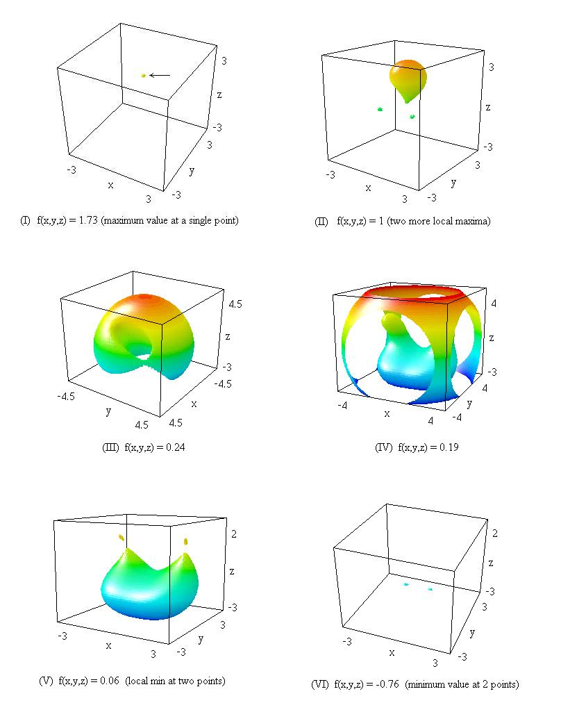

Each diagram below shows a level surface of f at the specified value.
 Remarks. The values of f(x,y,z) listed above are all estimates obtained by visual inspection during the scrolling process. In Figure (IV) the large, engulfing sphere has been cut up so as to show the object inside.